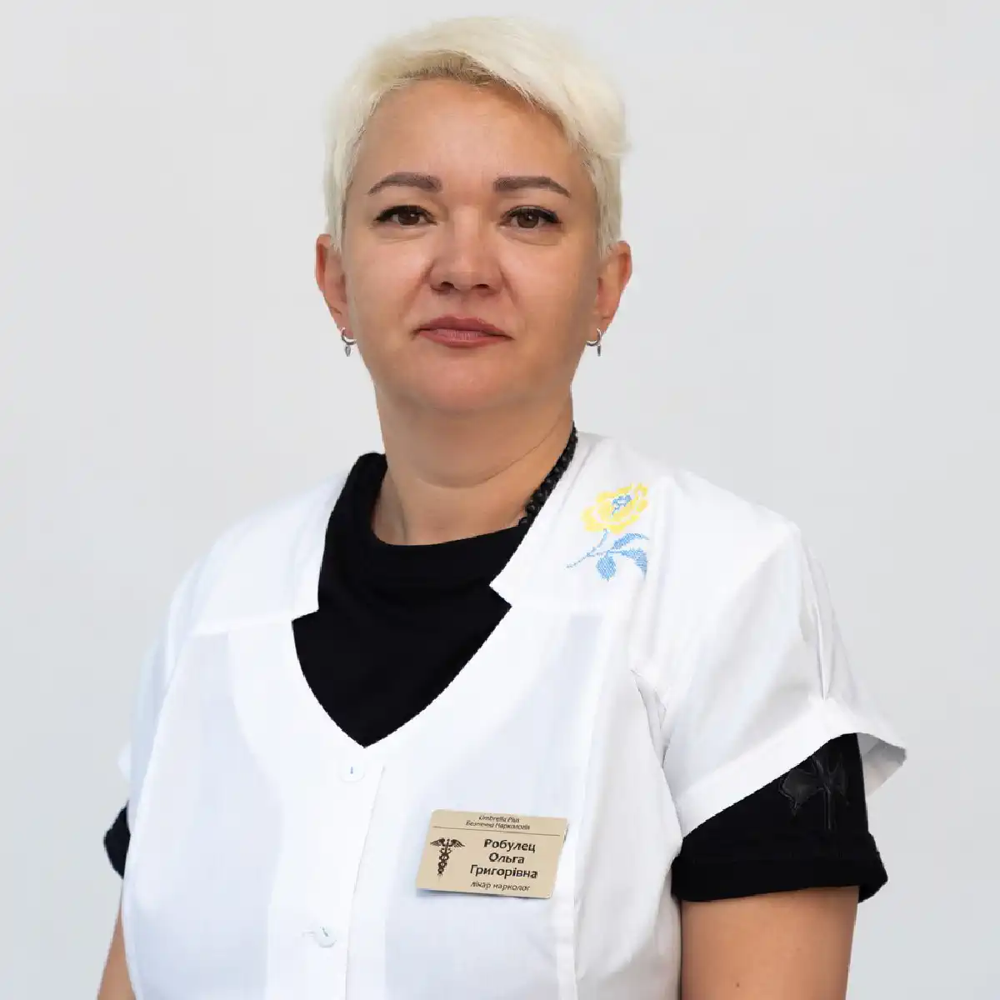

+38(068) 79 72 782
+38(068) 79 72 782Крапельниця від прегабалінів (Лірики)
Стабілізуємо стан за годинник


Безкоштовна консультація, працюємо цілодобово 24/7
Стабілізуємо стан за годинник

Дата написання: Оновлюється...
Останнє оновлення: Оновлюється...
Крапельниця від прегабаліну в Одесі — це медична допомога при інтоксикації, погіршенні самопочуття, передозуванні або абстинентному синдромі після вживання Лірики та інших препаратів на основі прегабаліну. Така процедура може знадобитися при вираженій слабкості, тривожності, порушенні сну, треморі, нудоті, сплутаності свідомості, нестабільному тиску та інших симптомах інтоксикації.
Прегабалін може застосовуватися в медичній практиці за призначенням лікаря, однак при безконтрольному вживанні, перевищенні рекомендованого дозування або поєднанні з алкоголем, седативними препаратами та іншими речовинами він здатний спричиняти тяжке погіршення стану, залежність і абстинентний синдром. У таких випадках організму потрібне не самостійне лікування, а медична допомога під контролем спеціаліста.
Завдання лікаря-нарколога — стабілізувати стан пацієнта, знизити токсичне навантаження, відновити водно-електролітний баланс, підтримати роботу серця, печінки, нирок і нервової системи. Перед процедурою спеціаліст оцінює загальний стан, вимірює тиск, пульс, сатурацію, уточнює скарги, тривалість вживання та наявність хронічних захворювань. Склад крапельниці підбирається індивідуально, з урахуванням стану пацієнта та можливих ризиків. Крапельниця від Лірики не є повноцінним лікуванням залежності, але допомагає безпечніше пройти гострий період, полегшити симптоми інтоксикації або ломки та підготувати людину до подальшого відновлення.
Інтоксикація прегабаліном — це стан, при якому організм зазнає серйозного навантаження через токсичний вплив препарату. Найчастіше вона розвивається при безконтрольному вживанні, тривалому прийомі без нагляду лікаря, перевищенні дозування, поєднанні Лірики з алкоголем, снодійними, транквілізаторами, опіоїдами або іншими психоактивними речовинами.
Небезпека такого стану полягає в тому, що симптоми можуть наростати поступово. Спочатку людина може відчувати сонливість, слабкість, запаморочення, порушення координації, загальмованість або тривожність. Потім стан здатний погіршуватися: з’являється сплутаність свідомості, різкі стрибки тиску, порушення дихання, виражена дезорієнтація, судоми або втрата свідомості. При інтоксикації прегабаліном не варто чекати, поки стан мине самостійно. Важливо якомога раніше звернутися по наркологічну медичну допомогу. Лікар оцінює стан пацієнта, визначає ступінь ризику та підбирає безпечну схему детоксикації й стабілізації організму.
Крапельниця після вживання Лірики може знадобитися, якщо у пацієнта спостерігається виражене погіршення самопочуття. Приводом для виклику нарколога можуть бути сильна слабкість, сонливість, запаморочення, нудота, блювання, тремор, тривожність, безсоння, порушення координації, сплутаність свідомості, нестабільний тиск або прискорене серцебиття.
Особливо важливо звернутися по допомогу, якщо прегабалін уживався разом з алкоголем, седативними препаратами, снодійними, знеболювальними або іншими речовинами. Такі поєднання можуть посилювати навантаження на нервову систему, серце й дихання, тому пацієнту потрібен медичний контроль. Під час огляду лікар оцінює життєво важливі показники та підбирає інфузійну терапію індивідуально. Крапельниця допомагає зменшити прояви інтоксикації, відновити баланс рідини й електролітів, підтримати роботу внутрішніх органів і полегшити загальний стан пацієнта.
Отруєння прегабаліном може проявлятися по-різному. Усе залежить від кількості вжитої речовини, тривалості прийому, загального стану здоров’я, віку пацієнта та поєднання з іншими препаратами або алкоголем. До основних симптомів належать виражена сонливість, слабкість, запаморочення, порушення координації, загальмованість, сплутаність свідомості, погіршення концентрації уваги, нудота, блювання, тремор, тривожність, нестабільний тиск, прискорене серцебиття, пітливість, безсоння або сильне психоемоційне напруження.
У тяжких випадках можуть з’являтися судоми, втрата свідомості, виражене порушення дихання, сильна дезорієнтація, різке збудження або переднепритомний стан. При таких симптомах необхідно терміново викликати лікаря. Самостійні спроби впоратися з інтоксикацією можуть бути небезпечними, оскільки без медичного контролю стан здатний швидко погіршитися.
Прегабалін — це активна діюча речовина, що входить до складу низки лікарських препаратів, які застосовуються в неврології та психіатрії. Найбільш відомою торговою назвою є Лірика, однак на фармацевтичному ринку представлені й інші аналоги з таким самим механізмом дії. Ці препарати належать до групи протисудомних засобів і використовуються для впливу на центральну нервову систему, знижуючи надмірну нервову активність і больову чутливість. До найпоширеніших препаратів на основі прегабаліну належать:
Усі ці препарати містять одну й ту саму діючу речовину, однак можуть відрізнятися дозуванням, формою випуску та виробником. У медичній практиці препарати на основі прегабаліну призначаються при нейропатичному болю, генералізованих тривожних розладах, епілепсії, а також у низці випадків при хронічних больових синдромах. Їх застосування дозволяє зменшити вираженість симптомів і покращити якість життя пацієнта. Однак при цьому важливо суворо дотримуватися призначеного дозування та режиму прийому, оскільки препарат впливає на психоемоційний стан і роботу мозку. Попри легальний статус і широке використання в медицині, прегабалін має потенціал формування залежності, особливо при тривалому або неконтрольованому прийомі.
Крапельниця при інтоксикації прегабаліном допомагає зняти гострий стан, але вона не усуває саму залежність. Якщо людина регулярно вживає Лірику без призначення лікаря, не може зупинитися, збільшує кількість препарату або повертається до вживання після спроб відмовитися, потрібне комплексне лікування.
Лікування залежності може включати консультацію нарколога, детоксикацію, зняття ломки, медикаментозну підтримку, психотерапію, роботу з тривожністю, порушеннями сну, емоційною нестабільністю та психологічною тягою. Головна мета комплексного лікування — не лише полегшити фізичний стан, а й допомогти пацієнту розпочати шлях до стійкого відновлення. Після стабілізації організму важливо продовжити терапію, щоб знизити ризик зриву та повернути людині контроль над своїм життям.
Ціна крапельниці від прегабаліну в Одесі починається від 2499 грн.
| Популярні послуги | Ціна |
|---|---|
| Консультація нарколога | Від 1500 грн |
| Лікування наркоманії | Від 2499 грн |
| Крапельниця від наркотиків | Від 2499 грн |
| Виведення із запою вдома | Від 2199 грн |
Склад крапельниці при отруєнні прегабаліном підбирається індивідуально лікарем-наркологом після огляду пацієнта. Враховується загальний стан, рівень свідомості, тиск, пульс, дихання, тривалість вживання Лірики, вираженість інтоксикації, наявність ломки, хронічних захворювань і можливе поєднання з алкоголем, седативними препаратами або іншими речовинами. Універсальної схеми не існує, оскільки важливо не лише полегшити симптоми, а й не посилити пригнічення нервової системи. Часто до складу крапельниці можуть входити:
Під час процедури лікар контролює тиск, пульс, дихання, рівень свідомості, швидкість інфузії та реакцію організму на препарати. За потреби склад крапельниці коригується.
Виклик нарколога додому при вживанні Лірики — це зручний і конфіденційний формат допомоги, коли пацієнту важко їхати до клініки або стан потребує швидкого медичного контролю. Лікар приїжджає за адресою, проводить огляд, оцінює ступінь інтоксикації, вимірює тиск, пульс, сатурацію, уточнює скарги, тривалість вживання та можливе поєднання з іншими речовинами.
Після огляду спеціаліст підбирає індивідуальну схему допомоги. За потреби проводиться крапельниця, детоксикація, відновлення водно-сольового балансу, підтримка нервової системи, серця, печінки та загального стану. Допомога вдома особливо актуальна при слабкості, тривожності, треморі, порушенні сну, нудоті, блюванні, нестабільному тиску та вираженій інтоксикації. Якщо стан тяжкий, є судоми, втрата свідомості, порушення дихання або виражена сплутаність свідомості, необхідно терміново викликати екстрену медичну допомогу.
Ломка від прегабаліну може розвиватися після різкого припинення вживання, особливо якщо людина приймала препарат тривалий час або безконтрольно. Такий стан може супроводжуватися тривожністю, дратівливістю, безсонням, слабкістю, тремором, головним болем, нудотою, пітливістю, внутрішнім напруженням, погіршенням настрою та вираженим дискомфортом.
Зняття наркотичної ломки має проходити під наглядом лікаря. Спеціаліст оцінює загальне самопочуття, підбирає безпечну схему допомоги, допомагає зменшити тривожність, покращити сон, підтримати нервову систему та відновити сили організму. Зняття ломки — це лише перший етап. Після фізичного полегшення може зберігатися психологічна тяга й ризик повторного вживання. Тому після детоксикації рекомендується продовжити лікування залежності за участю нарколога, психолога або реабілітаційного спеціаліста.
Самостійне лікування після вживання Лірики небезпечне тим, що людина може неправильно оцінити тяжкість стану. Сонливість, слабкість, тривожність, порушення координації або сплутаність свідомості можуть здаватися тимчасовими симптомами, але при інтоксикації вони здатні посилюватися та призводити до серйозних ускладнень.
Особливо небезпечно самостійно приймати седативні, снодійні, знеболювальні препарати, алкоголь або інші речовини “для полегшення”. Такі поєднання можуть погіршити стан, посилити навантаження на серце, нервову систему й дихання. Детоксикацію не рекомендується проводити без лікаря. Без медичного огляду неможливо правильно оцінити протипоказання, підібрати склад крапельниці та проконтролювати реакцію організму. При погіршенні стану після прегабаліну краще одразу звернутися по професійну допомогу.
Крапельниця від Лірики вдома в Одесі проводиться при інтоксикації, абстинентному синдромі, вираженій слабкості, тривожності, нудоті, треморі, порушенні сну та загальному погіршенні стану після вживання прегабаліну.
Лікар приїжджає додому з необхідними препаратами, стерильними витратними матеріалами й обладнанням для контролю стану. Перед процедурою спеціаліст проводить огляд, вимірює тиск, пульс, сатурацію, уточнює скарги, наявність хронічних захворювань і можливе поєднання Лірики з алкоголем або іншими речовинами. Після цього підбирається індивідуальний склад крапельниці. Інфузійна терапія допомагає знизити інтоксикацію, відновити баланс рідини й електролітів, зменшити слабкість, тривожність, нудоту, тремор і підтримати роботу внутрішніх органів. Після процедури лікар надає рекомендації щодо подальшого відновлення та лікування залежності.
Анонімна наркологічна допомога в Одесі може знадобитися при залежності від прегабаліну, алкоголю, наркотиків, аптечних препаратів та інших психоактивних речовин. Конфіденційність є важливою частиною звернення по допомогу, тому що багато пацієнтів бояться розголосу, осуду або постановки на облік.
Наркологічна допомога може включати виїзд лікаря додому, детоксикацію, зняття ломки, консультацію спеціаліста, медикаментозну підтримку, психологічну допомогу та підбір подальшої програми лікування. Кожен випадок розглядається індивідуально, тому що залежність може мати різні причини, тривалість і ступінь тяжкості. Анонімне звернення до спеціаліста допомагає зробити перший крок до одужання спокійно й безпечно. Чим раніше пацієнт отримує допомогу, тим вищий шанс уникнути тяжких наслідків для здоров’я, сім’ї, роботи та соціального життя.
Після зняття інтоксикації або ломки пацієнту часто потрібна психологічна підтримка. Фізичний стан може покращитися після крапельниці, але тривожність, дратівливість, порушення сну, почуття провини, апатія та тяга до повторного вживання можуть зберігатися.
Психологічна допомога при наркоманії спрямована на роботу з причинами залежності, зниження ризику зриву, відновлення мотивації та формування нових способів справлятися зі стресом без психоактивних речовин. Спеціаліст допомагає пацієнту зрозуміти, які ситуації провокують вживання, і вибудувати безпечнішу модель поведінки. Підтримка близьких також відіграє важливу роль. Родичам важливо не тиснути, не звинувачувати й не провокувати конфлікти, а допомогти пацієнту продовжити лікування та отримати професійну допомогу.
Крапельниця від прегабаліну — це важливий етап допомоги при інтоксикації, ломці та погіршенні стану, але вона не вирішує проблему залежності повністю. Інфузійна терапія допомагає стабілізувати організм, знизити токсичне навантаження, відновити водно-електролітний баланс, зменшити тривожність, слабкість, тремор та інші гострі симптоми. Після стабілізації стану важливо продовжити лікування. Пацієнту може знадобитися консультація нарколога, психотерапевтична підтримка, медикаментозний супровід, робота з психологічною тягою та реабілітаційна програма.
Крапельниця від Лірики в Одесі може стати першим кроком до відновлення. Вона допомагає людині вийти з гострого стану, відчути фізичне полегшення та підготуватися до подальшого лікування залежності. Комплексний підхід підвищує шанси на стійкий результат і знижує ризик повторного вживання.
Телефон для консультації та виклику нарколога: +38(050-021-69-57)

Статтю перевірено експертом
Могучев Станіслав
Лікар-терапевт, ординатор
Можливо цікава стаття:
Янтарна кислота, Бетаргін та Ентеросгель при алкогольної інтоксикації

Так, ми суворо дотримуємося повної конфіденційності на всіх етапах лікування. Інформація про пацієнта, діагноз та проходження терапії не передається третім особам. Звернення до нас не тягне за собою постановку на облік. Ви можете бути впевнені у безпеці та анонімності.
Програма лікування розробляється індивідуально після консультації з фахівцем. Враховуються вид залежності, її тривалість, фізичний та психологічний стан пацієнта. Такий підхід дозволяє підвищити ефективність терапії та знизити ризик зриву. Ми не використовуємо шаблонні рішення.
Так, ми супроводжуємо пацієнтів і після основного курсу лікування. Проводяться консультації, рекомендації щодо адаптації та профілактики рецидивів. За потреби можлива подальша психологічна підтримка. Це допомагає зберегти результат та повернутися до повноцінного життя.
Анонимно

Помогли при ломке
Анонимно
Хочу поблагодарить специалистов фирмы «Амбрела плюс» за реальную помощь в сложный период. Обратился в состоянии ломки, было тяжело и физически, и морально. Врачи отреагировали быстро, всё объяснили, поддерживали на каждом этапе. Состояние стабилизировали, стало значительно легче уже в первые часы. Спасибо за профессионализм и человеческое отношение.
Номер телефону:
+380 (68) 797 27 82
+380 (50) 021 69 57
Адресу наркологічного центра вашого міста уточнюйте за
телефоном
Працюємо: Київ, Одеса, Львів, Харків, Дніпро, Запоріжжя,
Черкасах, Чугуєві, Чорноморську, Кам'янському
Telegram: t.me/umbrellaplus
Графік работы: Цілодобово